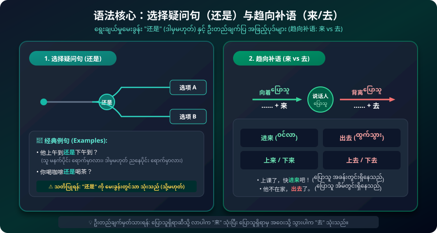

တိရစ္ဆာန်ရုံသို့ သွားရောက်ခြင်း • ပန်ဒါကြီး ကြည့်ရှုခြင်း • ရွေးချယ်မှု မေးခွန်း "还是" (ဒါမှမဟုတ်) • ဆင့်ကဲကြိယာ ယာဉ်နည်းလမ်း (骑自行车去) • ဦးတည်ချက်ပြ အဖြည့်ပုဒ် (趋向补语: 来 vs 去) စည်းမျဉ်းများ
အသံထွက်ခလုတ်ကို နှိပ်၍ တရုတ်စံအသံထွက်နှင့်အတူ မြန်မာဘာသာပြန်၊ ဝေါဟာရအထားအသိုများကို လေ့လာပါ။
တိရစ္ဆာန်ရုံသို့ စက်ဘီးစီးသွားရန်နှင့် လေဆိပ်သို့ သူငယ်ချင်းကြိုရန် ချိန်းဆိုခြင်း မြင်ကွင်းများ။

ရွေးချယ်မှုမေးခွန်း "还是"၊ ဆင့်ကဲကြိယာဖြင့် နည်းလမ်းဖော်ပြခြင်းနှင့် 趋向补语 (来 vs 去) စည်းမျဉ်းများ။
ရွေးချယ်စရာ အဖြေနှစ်ခု သို့မဟုတ် နှစ်ခုထက်ပိုသည်ကို "还是" ဖြင့် ဆက်စပ်၍ မေးမြန်းသည်။
⚠️ သတိပြုရန်: "还是" ကို မေးခွန်းတွင်သာ သုံးပြီး၊ ရိုးရိုးဝါကျတွင် "或者" (huòzhě) ကို သုံးရသည်။
ဆင့်ကဲကြိယာဝါကျတွင် ပထမကြိယာသည် ဒုတိယကြိယာ၏ ဆောင်ရွက်ပုံ နည်းလမ်း (Manner/Transportation) ကို ဖော်ပြသည်။
စကားပြောသူရှိရာဆီသို့ ဦးတည်ပါက "来"၊ စကားပြောသူရှိရာမှ အဝေးသို့ ဦးတည်ပါက "去" ကို ကြိယာနောက်တွင် ကပ်၍ သုံးသည်။
"多 + Adj + 啊！" သည် ချီးကျူးအံ့သြမှုကို ဖော်ပြပြီး၊ "这两天" သည် မကြာသေးမီက ရက်ပိုင်းကို ပြဆိုသည်။
တိရစ္ဆာန်ရုံ၊ သွားလာရေးယာဉ်များနှင့် အပန်းဖြေခရီးစဉ်ဆိုင်ရာ အသုံးအနှုန်းများ။
တတိယအသံ + စတုတ္ထအသံ တွဲဖက်သံထွက်များနှင့် သစ်သီးခြံအကြောင်း ပြန်လည်ပြောဆိုခြင်း။
王兰告诉我，离我们学校不远有一个果园。那个果园有很多水果，可以看，可以吃，也可以买。我们应该去看看。我们想星期天去。我们骑自行车去。
Wáng Lán gàosu wǒ, lí wǒmen xuéxiào bù yuǎn yǒu yí ge guǒyuán. Nà ge guǒyuán yǒu hěn duō shuǐguǒ, kěyǐ kàn, kěyǐ chī, yě kěyǐ mǎi. Wǒmen yīnggāi qù kànkan. Wǒmen xiǎng xīngqītiān qù. Wǒmen qí zìxíngchē qù.
အဖြေတစ်ခုစီကို နှိပ်၍ မိမိ၏ နားလည်မှုကို စစ်ဆေးနိုင်ပါသည်။ မှန်ကန်သော အဖြေကို ချက်ချင်း ရှင်းလင်းချက်နှင့်အတူ ပြသပေးပါမည်။